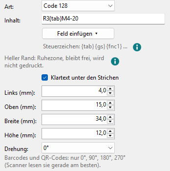
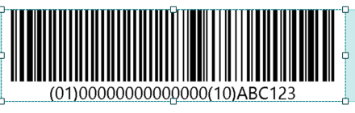
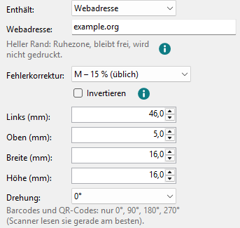
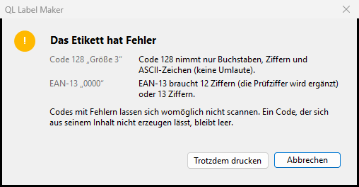
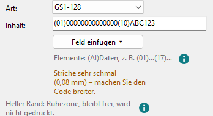
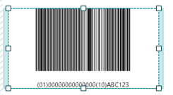

Barcodes und QR-Codes
Strichcodes für Artikelnummern und Lagerplätze, QR-Codes für alles, was ein Handy öffnen soll. Beide werden auf ganze Druckpunkte gerechnet, damit Scanner sie sicher lesen.
-
Barcode
Werkzeug Barcode oder Einfügen > Barcode. Bei Art wählen Sie:
- Code 128
- Buchstaben, Ziffern und ASCII-Zeichen (keine Umlaute)
- GS1-128
- Daten nach GS1, z. B. Artikelnummer (GTIN), Mindesthaltbarkeit und Charge
- EAN-13
- 12 Ziffern, die Prüfziffer wird ergänzt; oder alle 13 Ziffern
Den Inhalt tippen Sie darunter ein. Klartext unter den Strichen druckt ihn zusätzlich lesbar. Der Code füllt seinen Rahmen, so weit es ganze Druckpunkte je Strich erlauben.

Steuerzeichen in Code 128 schreiben Sie wie die Datumsfelder in geschweiften Klammern:
{tab}Tabulator,{cr}Wagenrücklauf,{lf}Zeilenvorschub,{gs}Gruppentrenner,{rs}Datensatztrenner,{eot}Übertragungsende,{fnc1}FNC1 und{xNN}ein beliebiges ASCII-Zeichen über seinen Hex-Code (00–7F). Sie werden codiert, aber nicht unter den Strichen gedruckt. Die Zeile unter dem Inhalt erinnert daran, das (i) daneben zeigt die ganze Liste.GS1-128 erwartet Elemente mit ihrem Datenbezeichner (AI) in Klammern, z. B.
(01)00000000000000(17)261231(10)ABC123: (01) GTIN mit 14 Ziffern, (17) Mindesthaltbarkeit als JJMMTT, (10) Charge, (21) Seriennummer. Die Klammern stehen unter den Strichen, werden aber nicht codiert; die FNC1-Trennzeichen setzt das Programm selbst. Falsche Längen oder Prüfziffern stehen rechts in Rot.
Wechseln Sie die Art und passt der Inhalt nicht dazu, setzt das Programm einen neutralen Beispielinhalt ein:
0000000000000bei EAN-13,(01)00000000000000(10)ABC123bei GS1-128. -
QR-Code
Werkzeug QR-Code oder Einfügen > QR-Code. Bei Enthält wählen Sie, was ein Handy mit dem Code machen soll; darunter erscheinen die passenden Felder:
- Text
- beliebiger Text, auch mit Umlauten
- Webadresse
- öffnet eine Webseite; fehlt
https://, wird es ergänzt - Kontakt
- Vorname, Nachname, Firma, Telefon, E-Mail, Straße, PLZ und Ort, Website: Handys bieten an, den Kontakt zu speichern
- WLAN
- Netzwerkname, Passwort, Verschlüsselung, verborgenes Netzwerk: Handys bieten an, sich zu verbinden
- An, Betreff, Nachricht
- Telefonnummer
- Handys bieten an, die Nummer anzurufen
- SMS
- Nummer und Nachricht

Fehlerkorrektur bestimmt, wie viel vom Code beschädigt sein darf: von L – 7 % (am kleinsten) bis H – 30 % (am robustesten); üblich ist M – 15 %. Mehr Korrektur macht den Code dichter. Invertieren druckt ihn weiß auf schwarz: Weiß auf Schwarz.
Der QR-Code ist immer quadratisch. Fehlen Angaben oder ist der Inhalt zu lang, steht das rechts in Rot, und vor dem Druck fragt das Programm nach (siehe unten).
-
Wenn der Code nicht passt
Unter dem Inhalt steht rechts, was mit dem Code nicht stimmt. In Rot sind Fehler; der Code bekommt einen rot gestrichelten Rahmen:
- Der Inhalt lässt sich nicht codieren; die Meldung nennt den Grund. Gedruckt bleibt der Code leer.
- Zu schmal: mindestens … mm (bei QR-Codes Zu klein): Die Striche passen mit einem Druckpunkt je Strich nicht einmal mit der Ruhezone hinein. Gedruckt wird der Code abgeschnitten, so wie auf der Zeichenfläche.
Hat ein Etikett solche Fehler, fragt der QL Label Maker vor dem Druck: Das Etikett hat Fehler nennt die Codes und ihre Fehler, mit Trotzdem drucken und Abbrechen; vorgewählt ist Abbrechen.

In Orange sind Hinweise; gedruckt wird ohne Rückfrage, aber Scanner lesen den Code vielleicht nicht:
- Der Code ist breiter als sein Rahmen – besser mindestens … mm: Der Rahmen ist schmaler als ein Druckpunkt je Strich, der Code passt aber mit seiner Ruhezone. Er wird ganz gezeichnet und reicht in die Ruhezone hinein.
- Der Code liegt teilweise außerhalb des druckbaren Bereichs und wird abgeschnitten.
- Striche sehr schmal (bei QR-Codes Punkte sehr klein): schmaler als 3 Druckpunkte, bei EAN-13 unter 80 % der üblichen 0,33 mm. Die Meldung nennt die Breite.
- Der Klartext unter den Strichen passt bei dieser Größe nicht.

Wird der Code schmaler, verkleinert sich der Klartext, damit er unter die Striche passt.

-
Datum im Code
Feld einfügen ▾ gibt es auch hier, zum Beispiel für eine Chargennummer
LOT{date:yyMMdd}. Wie Felder funktionieren, steht unter Grafiktext und Mengentext.